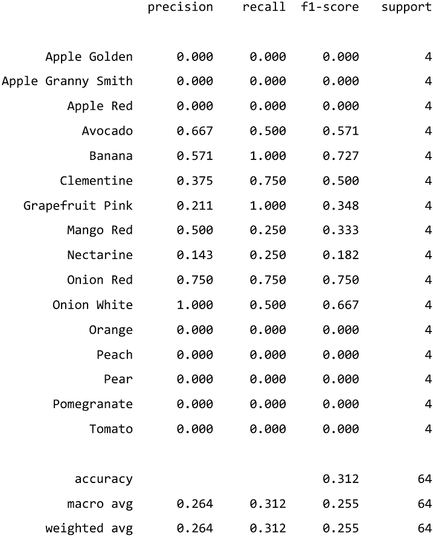

第八章:可视化卷积神经网络
这些是我们将要讨论的主要话题:
- 用传统解释方法评估 CNN 分类器
- 用基于激活的方法可视化学习过程
- 使用基于梯度的归因方法评估错误分类
- 使用基于扰动的归因方法理解分类
技术要求
本章的示例使用了mldatasets、pandas、numpy、sklearn、skimage、tensorflow、matplotlib、seaborn、cv2、tf-explain、tf-keras-vis、lime、alibi和shap库。关于如何安装所有这些库的说明在前言中。本章的代码位于这里:https://github . com/packt publishing/Interpretable-Machine-Learning-with-Python/tree/master/chapter 08。
使命
允许顾客处理购物的自助结账机发明于 1984 年，但直到世纪之交才开始出现在大多数连锁超市中。然而，尽管这些机器为零售商和客户带来了许多优势，但它们远非完美——它们容易发生入店盗窃、机械故障、缺乏可访问性以及不充分的客户服务体验。
在过去的十年里，许多公司都在争先恐后地用深度学习来解决这些问题。例如，摄像机可以监控身体姿势、产品运动和面部表情。他们可以检测入店行窃事件，甚至可以通过训练有素的深度学习模型自动降低收银台，使其更便于轮椅使用。
最近的另一个趋势是，在大多数发达国家，连锁便利店正处于快速增长阶段。然而，他们努力跟上需求，并支付低工资，使他们能够在大多数商店关门时营业。日本在这一趋势中处于领先地位，因为便利店长期以来一直主导着零售业，而且工资相对较高，所以他们已经适应了保持便利。在这种形式的零售中，顾客不仅期望 24/7 的可用性，而且期望非常快速的结账。自助结账可能会慢一些，这也是为什么它还没有在全球范围内被便利店采用的原因。然而，它已经在一些日本连锁店中有售，并取得了很高的成功。
在亚洲以外，一家大型连锁便利店从日本购买了自助结账系统，以复制这一成功。该公司的高管们兴奋不已，但他们很快意识到，为了让该系统正常工作，所有商品都必须贴上条形码，这只是一种商品的问题。与日本消费者不介意购买塑料包装的水果不同，在这家连锁店经营的市场上，消费者不信任包装好的整个水果。不幸的是，塑料将是必要的，以确保条形码标签不会脱落或损坏，而且消费者也不信任直接在水果上贴有大量粘合剂的大条形码标签。有一个手动输入水果名称的选项，正如在超市中所做的那样(参见图 8.1 )，但是它会使每个项目的过程至少减慢 15 秒，这在的“方便”设置中是不可接受的:
图 8.1-高亮显示“水果”按钮的日本自助结账(仅用于说明目的)
高管们决定利用自助结账系统中的摄像头来自动检测水果，这样顾客就不必进去了。为此，他们确定了 16 种不能包装出售的水果和蔬菜，并付钱给一家人工智能咨询公司开发一个模型来对它们进行分类。这家公司带回了最有希望的结果:高达 99.9%的准确率，考虑到他们既不要求领域知识也不要求数据，这是令人惊讶的。然而，一旦零售商用他们的自助结账机进行测试，他们意识到只有五分之一到三分之一的水果和蔬菜被正确分类。当高管们与顾问们讨论这个问题时，他们坚持认为他们的模型近乎完美，需要校准的是自助结账系统的摄像头。
为了寻求第二种意见和对模型的诚实评估，这家连锁便利店已经联系了另一家人工智能咨询公司——你的！
方法
没有一种解读方法是完美的，即使在最好的情况下也只能告诉你故事的一部分。因此，您决定首先使用传统的解释方法评估模型的预测性能，这些方法包括:
- ROC 曲线和 ROC-AUC
- 混淆矩阵及其衍生的所有指标(准确度、精确度、召回率、F1)。
然后，您将使用两种基于激活的方法来检查模型:
- 中间激活
- 激活最大化
然后用三种基于梯度的方法评估决策:
- 显著图
- Grad-CAM
- 集成渐变
接下来是三种基于扰动的方法:
- 遮挡敏感度
- 石灰
- CEM
最后，还有一个额外的基于反向传播的方法:
- SHAP 的深层解释者
我希望您能理解为什么模型没有发挥应有的作用，以及如何在本流程的结束时修复它。您还可以利用您将制作的许多情节和可视化效果，将这个故事传达给便利店公司的高管。
制剂
您将在此处找到该示例的大部分代码:https://github . com/packt publishing/Interpretable-Machine-Learning-with-Python/blob/master/chapter 08/fruit classifier _ part 1 . ipynb，直到使用基于扰动的属性方法探索分类部分。仅该部分就位于此处:https://github . com/packt publishing/Interpretable-Machine-Learning-with-Python/blob/master/chapter 08/fruit classifier _ part 2 . ipynb。
加载库
mldatasets加载数据集pandas、numpy和sklearn(Scikit-learn)来操纵它tensorflow用模型来拟合和预测matplotlib、seaborn、cv2、skimage、tf-explain、tf-keras-vis、lime、alibi、shap可视化解释
您应该首先加载它们:
import math
import os
import mldatasets
import pandas as pd
import numpy as np
from sklearn import preprocessing, metrics
import tensorflow as tf
from tensorflow import keras
from keras.utils.data_utils import get_file
import matplotlib.pyplot as plt
from matplotlib import cm
import seaborn as sns
import cv2
#PART 1 only
from tf_explain.core.activations import ExtractActivations
from tf_keras_vis.activation_maximization import\
ActivationMaximization
from tf_keras_vis.saliency import Saliency
from tf_keras_vis.utils import normalize
from tf_keras_vis.gradcam import GradcamPlusPlus
from tf_explain.core.integrated_gradients import IntegratedGradients
#PART 2 only
from skimage.segmentation import mark_boundaries
from tf_explain.core.occlusion_sensitivity import\
OcclusionSensitivity
import lime
from lime import lime_image
from alibi.explainers import CEM
import shap
让我们用这个命令检查一下 TensorFlow 是否加载了正确的版本。应该是 2.0 版或以上:
print(tf.__version__)
了解和准备数据
用于训练模型的数据是在学术研究中创建的，并在 ka ggle(https://www.kaggle.com/moltean/fruits)公开提供。它被称为“水果 360 ”,因为当照相机从每个角度和不止一个轴上拍照时，马达旋转水果。照片是在一张白纸上用一致的灯光拍摄的，但背景用一种算法替换成了白色，所以图像没有阴影。水果 360 数据集包含 100 多种水果和蔬菜。您将加载的数据是相同的 dataet，只不过它只有 16 个类，对应于便利店连锁店高管想要分类的那些类。它还包括一个小型验证集，其中有一些图片，他们用这些图片测试了模型，并认为这些图片看起来像他们商店里的水果和蔬菜。他们提供了模型所需尺寸和更高分辨率(原始)尺寸的验证图像。
我们将这样的数据加载到四个数据集，分别对应于训练、测试、验证和原始验证:
X_train, X_test, X_val, X_val_orig, y_train, y_test,\
y_val, y_val_orig =\
mldatasets.load("fruits-360", prepare=True)
我们可以用下面的代码来验证numpy数组的形状是否符合我们的预期:
print('X_train:%s' % (X_train.shape,))
print('X_test:%s' % (X_test.shape,))
print('X_val:%s' % (X_val.shape,))
print('X_val_orig:%s' % (X_val_orig.shape,))
print('y_train:%s' % (y_train.shape,))
print('y_test:%s' % (y_test.shape,))
print('y_val:%s' % (y_val.shape,))
print('y_val_orig:%s' % (y_val_orig.shape,))
前面的代码输出每个数组的维度。您可以看出每个X元组中的第一个数字与其对应的y元组相匹配。y元组中的第二个数字指示标签还没有被一键编码，而是以它们的文本或顺序形式，因为否则将会有16而不是1。您还可以看出，所有的X数组都具有相同的尺寸100宽度、100高度和3通道，除了最初的验证(X_val_orig)，它应该具有更高的分辨率。我们不需要原始的验证数据集来进行推断，所以它不满足模型的维度要求也没关系:
X_train: (7872, 100, 100, 3) X_test: (2633, 100, 100, 3) X_val: (64, 100, 100, 3) X_val_orig: (64, 400, 400, 3) y_train: (7872, 1) y_test: (2633, 1) y_val: (64, 1) y_val_orig: (64, 1)
如果你打印(X_train[0])，你会注意到有一串 255，这是用来表示图像中红色、绿色和蓝色的最大数字。然而，为了效率和可靠性，CNN 通常将每个值训练为 0 到 1 之间的浮点数。为此，我们必须将X_train、X_test和X_val数组规范化，如下所示:
X_train = X_train.astype('float32')/255
X_test = X_test.astype('float32')/255
X_val = X_val.astype('float32')/255
我们需要执行的另一个预处理步骤是y标签，因为我们需要 OHE 表单来评估模型的预测性能。一旦我们初始化了OneHotEncoder，我们将需要fit它到训练数据(X_train)。我们还可以将编码器中的categories提取到一个列表(fruits_l)中，以验证它是否包含所有 16:
ohe = preprocessing.OneHotEncoder(sparse=False) ohe.fit(y_train) fruits_l = ohe.categories_[0].tolist() print(fruits_l)
前面的代码应该输出以下列表。它应该是按字母顺序排列的，因为图像所在的文件夹是按这个顺序排列的。假设编码器使用这个顺序通常是安全的。然而，如果这个假设是不正确的，我们可以在评估模型性能时进行判断。例如，如果编码是以相反的字母顺序对类别进行的，则类别预测也将是相反的:
['Apple Golden', 'Apple Granny Smith', 'Apple Red', 'Avocado', 'Banana', 'Clementine', 'Grapefruit Pink', 'Mango Red', 'Nectarine', 'Onion Red', 'Onion White', 'Orange', 'Peach', 'Pear', 'Pomegranate', 'Tomato']
为了再现性，总是像这样初始化你的随机种子:
rand = 9 os.environ['PYTHONHASHSEED']=str(rand) np.random.seed(rand) tf.random.set_seed(rand)
众所周知，对于深度学习来说，确定性是非常困难的，并且通常依赖于会话、平台和架构。如果你使用的是 https://github.com/NVIDIA/framework-determinism 的tensorflow-determinism。
现在，让我们来看看数据集中有哪些图像。我们知道训练数据集和测试数据集非常相似，所以我们将从测试数据集开始。我们可以迭代fruits_l中的每个类，并用np.random.choice从测试数据集中随机选择一个。我们将每个图像放在一个 4 × 4 的网格上，上面有类别标签:
plt.subplots(figsize=(10,10))
for f, fruit in zip([*range(len(fruits_l))], fruits_l):
plt.subplot(4, 4, f+1)
plt.title(fruits_l[f], fontsize=12)
idx = np.random.choice(np.where(y_test[:,0] == fruit)[0], 1)[0]
plt.imshow(X_test[idx], interpolation='spline16')
plt.axis("off")
plt.show()
前面的代码生成图 8.2 。你可以看出水果的边缘有明显的像素化；有些水果看起来比其他的颜色更深，有些照片是从奇怪的角度拍摄的:
图 8.2–测试数据集的随机样本
现在让我们对验证数据集做同样的操作，将其与测试/训练数据集进行比较。我们可以使用和以前一样的代码，除了我们用yval代替y_test:
plt.subplots(figsize=(10,10))
for f, fruit in zip([*range(len(fruits_l))], fruits_l):
plt.subplot(4, 4, f+1)
plt.title(fruits_l[f], fontsize=12)
idx = np.random.choice(np.where(y_val[:,0] == fruit)[0], 1)[0]
plt.imshow(X_val[idx], interpolation='spline16')
plt.axis("off")
plt.show()
前面的代码生成图 8.3 。您可以从顶部和侧面的角度看出，验证集的水果和蔬菜像素较少，光线较好:
图 8.3–验证数据集的随机样本
在这一章中，我们不需要训练一个 CNN。谢天谢地，这是客户提供给我们的。
加载 CNN 模型
model_path = get_file('CNN_fruits_final.hdf5', 'https://github.com/PacktPublishing/Interpretable-Machine-Learning-with-Python/blob/master/models/CNN_fruits_final.hdf5?raw=true')
cnn_fruits_mdl = keras.models.load_model(model_path)
cnn_fruits_mdl.summary()
前面的代码片段输出了下面的摘要。它几乎包含了我们需要知道的关于这个模型的所有东西。它有四个卷积层(Conv2D)，每个卷积层后面都有一个最大池层(MaxPooling2D)。然后，它具有用于正则化的第一Dropout层，接着是Flatten层和全连接层(Dense)。然后，输出前多了一个Dropout。自然地，16 个神经元在最后一层对应于每一类:
Model: "CNN_fruits" _________________________________________________________________ Layer (type) Output Shape Param # ================================================================= conv2d_1 (Conv2D) (None, 99, 99, 16) 208 _________________________________________________________________ maxpool2d_1 (MaxPooling2D) (None, 49, 49, 16) 0 _________________________________________________________________ conv2d_2 (Conv2D) (None, 48, 48, 32) 2080 _________________________________________________________________ maxpool2d_2 (MaxPooling2D) (None, 24, 24, 32) 0 _________________________________________________________________ conv2d_3 (Conv2D) (None, 23, 23, 64) 8256 _________________________________________________________________ maxpool2d_3 (MaxPooling2D) (None, 11, 11, 64) 0 _________________________________________________________________ conv2d_4 (Conv2D) (None, 10, 10, 128) 32896 _________________________________________________________________ maxpool2d_4 (MaxPooling2D) (None, 5, 5, 128) 0 _________________________________________________________________ dropout_1 (Dropout) (None, 5, 5, 128) 0 _________________________________________________________________ flatten (Flatten) (None, 3200) 0 _________________________________________________________________ dense_1 (Dense) (None, 150) 480150 _________________________________________________________________ dropout_2 (Dropout) (None, 150) 0 _________________________________________________________________ dense_2 (Dense) (None, 16) 2416 ================================================================= Total params: 526,006 Trainable params: 526,006 Non-trainable params: 0 _________________________________________________________________
用传统解释方法评估 CNN 分类器
我们可以使用模型自身的evaluate函数轻松地得出所有三个数据集的精确度，如下所示:
train_score = cnn_fruits_mdl.evaluate(X_train,\
ohe.transform(y_train), verbose=0)
test_score = cnn_fruits_mdl.evaluate(X_test,\
ohe.transform(y_test), verbose=0)
val_score = cnn_fruits_mdl.evaluate(X_val,\
ohe.transform(y_val), verbose=0)
print('Train accuracy:\t{:.1%}'.format(train_score[1]))
print('Test accuracy:\t{:.1%}'.format(test_score[1]))
print('Val accuracy:\t{:.1%}'.format(val_score[1]))
前面的代码片段输出了以下图形:
Train accuracy: 100.0% Test accuracy: 99.9% Val accuracy: 31.2%
事实上，如果您使用最佳超参数对一个模型进行足够多时期的训练，您可以期望该模型总是达到100%训练精度。近乎完美的测试精度更难达到，这取决于这两者之间的差异。我们知道测试数据集只是来自同一集合的图像样本，所以达到如此高的准确度(99.9%)并不令人特别惊讶。
当在商业环境中讨论分类模型时，外行的利益相关者通常只对一个数字感兴趣:准确性。让这一点推动讨论很容易，但它有更多的细微差别。例如，令人失望的验证准确性(31.2%)可能意味着很多事情。这可能意味着五个类别得到了完美的分类，而所有其他类别都没有，或者 10 个类别只得到一半的错误分类。有许多可能会发生的事情。
在任何情况下，当处理多类分类问题时，低于 50%的准确率可能并不像看起来那么糟糕。由于 16 个类别大致均匀分布，我们必须注意到无信息率可能在 7%左右，因此 31.2%仍然比这个数字高几个数量级。事实上，要达到 100%是很难的！对于一个机器学习者来说，这意味着如果我们仅仅基于验证准确性的结果来判断，模型仍然在学习一些可以改进的有价值的东西。
我们将首先使用带有evaluate_multiclass_mdl函数的测试数据集来评估模型。参数包括模型(cnn_fruits_mdl)、我们的测试数据(X_test)和相应的标签(y_test)，以及类名(fruits_l)和编码器(ohe)。最后，我们不需要它来绘制 ROC 曲线，因为它们将是完美的(plot_roc=False)。此函数返回预测的标签和概率，我们可以将它们存储在变量中以备后用:
y_test_pred, y_test_prob =\
mldatasets.evaluate_multiclass_mdl(cnn_fruits_mdl, X_test,\
y_test, fruits_l, ohe, plot_roc=False)
前面的代码生成带有混淆矩阵的图 8.4 和带有每个类的性能指标的图 8.5 :

图 8.4–测试数据集的混淆矩阵
尽管图 8.4 中的混淆矩阵似乎暗示了一个完美的分类，但是一旦你看到图 8.5 中的精度和召回分类，你就可以知道模型在两种苹果、油桃和梨上存在问题:
图 8.5–测试数据集近乎完美的预测性能指标
现在，让我们重复相同的代码片段，但用于验证数据集。这一次，我们希望看到 ROC 曲线(plot_roc=True)，但只是平均值，而不是逐类的(plot_roc_class=False)，因为每类只有四张图片。鉴于样本数量较少，我们可以在混淆矩阵中显示数字，而不是百分比(pct_matrix=False):
y_val_pred, y_val_prob =\
mldatasets.evaluate_multiclass_mdl(cnn_fruits_mdl, X_val,\
y_val, fruits_l, ohe, plot _roc=True,\
plot_roc_class=False, pct_ matrix=False)
前面的代码片段生成了图 8.6 中的 ROC 曲线、图 8.7 中的混淆矩阵、图 8.8 中的分类表:
图 8.6–验证数据集的 ROC 曲线
验证 ROC 图(图 8.6 )显示了宏观平均值和微观平均值 ROC 曲线。这两者的区别在于它们是如何计算的。为每个类独立计算宏度量，然后进行平均，区别对待每个类。鉴于微平均值因子在每一类的贡献或代表中，一般来说，微平均值更可靠:
图 8.7–测试数据集的混淆矩阵
如果我们看一下图 8.7 中的混淆矩阵，我们可以知道只有香蕉和柚子被分类为四分之四。然而，很多水果被错误地归类为香蕉和柚子，尤其是柚子！另一方面，许多水果从未被正确分类，例如所有的苹果品种和西红柿。它们中的许多在形状或颜色上与其他水果相似，所以你可以理解这是怎么发生的，但是一个鳄梨怎么会被误归类为香蕉或红洋葱呢？

图 8.8–测试数据集的预测性能指标
图 8.8 中验证数据集的预测性能指标与我们在混淆矩阵中看到的一致。葡萄柚和香蕉的回忆率很高，但准确率很低，一半的班级对两者的回忆率都是 0%。
确定要关注哪些错误分类
我们已经注意到一些令人兴奋的错误分类，我们可以重点关注:
- 葡萄柚假阳性:验证数据集中的 64 个样本中有 15 个被误归类为葡萄柚。将近四分之一！根据模型，是什么让葡萄柚如此容易与其他水果混淆？
- 鳄梨假阴性:鳄梨呈梨形，但颜色较深，表皮具有独特的鳄鱼皮纹理。很难理解这种水果怎么会被错误分类。
为了理解这些错误的分类，我们也应该检查那些相同水果的真正的积极因素。
为了可视化未来的任务，我们可以创建一个DataFrame ( preds_df)，其中真实标签(y_true)在一列，预测标签在另一列(y_pred)。为了理解这些预测的模型有多确定，我们可以用概率创建另一个数据框架(probs_df)。我们可以为这些概率生成列合计，以便根据模型在所有样本中最确定的水果对列进行排序。然后，我们可以将预测数据框与概率数据框的前八列连接起来，因为我们知道只有一半的水果被分类:
preds_df = pd.DataFrame({'y_true':y_val[:,0], 'y_pred':y_val_pred})
probs_df = pd.DataFrame(y_val_prob*100).round(1)
probs_df.loc['Total']= probs_df.sum().round(1)
probs_df.columns = fruits_l
probs_df = probs_df.sort_values('Total', axis=1, ascending=False)
probs_df.drop(['Total'], axis=0, inplace=True)
probs_final_df = probs_df.iloc[:,0:8]
preds_probs_df = pd.concat([preds_df, probs_final_df], axis=1)
现在让我们输出带有颜色编码的数据帧，用于我们有兴趣评估的预测实例。一方面，我们有葡萄柚假阳性，另一方面，鳄梨假阴性。但我们也有真正的积极因素。我们已经强调了所有这些问题，但只对那些与我们的错误分类有关的问题感兴趣。最后，我们加粗了所有超过 50%的概率，隐藏了所有 0%的概率，以便更容易发现任何更高的概率:
pd.set_option('precision', 1)
preds_probs_df.style.apply(lambda x: ['background: lightgreen'\
if (x[0] == x[1]) else '' for i in x], axis=1).\
apply(lambda x: ['background: orange' if (x[0] != x[1] and\
x[1] == 'Grapefruit Pink') else '' for i in x], axis=1).\
apply(lambda x: ['background: yellow' if (x[0] != x[1] and\
x[0] == 'Avocado') else '' for i in x], axis=1).\
apply(lambda x: ['font-weight: bold' if isinstance(i, float)\
and i >= 50 else '' for i in x], axis=1).\
apply(lambda x: ['color:transparent' if i == 0.0 else ''\
for i in x], axis=1)
前面的代码片段产生了图 8.9 。你可以通过高亮显示来判断哪些是葡萄柚假阳性，哪些是鳄梨假阴性，以及哪些是这些水果的真阳性:葡萄柚的#36-39，以及鳄梨的#5 和#7:
图 8.9–包含验证数据集中所有 64 个样本及其真实和预测标签以及预测概率的表格
我们可以用下面的代码轻松地将这些实例的索引存储在列表中。这样，为了将来的参考，我们可以遍历这些列表来评估单个预测或子集数组，并用它们来执行整个组的解释任务。如你所知，我们有所有四组的名单:
avocado_FN_idxs = preds_df[(preds_df['y_true'] !=\
preds_df['y_pred']) & (preds_df['y_true'] == 'Avocado')].\
index.to_list()
avocado_TP_idxs = preds_df[(preds_df['y_true'] ==\
preds_df['y_pred']) & (preds_df['y_true'] == 'Avocado')].\
index.to_list()
grapefruit_FP_idxs = preds_df[(preds_df['y_true'] !=\
preds_df['y_pred']) & (preds_df['y_pred'] ==\
'Grapefruit Pink')].index.to_list()
grapefruit_TP_idxs = preds_df[(preds_df['y_true'] ==\
preds_df['y_pred']) & (preds_df['y_pred'] ==\
'Grapefruit Pink')].index.to_list()
既然我们已经预处理了所有的数据，那么模型已经完全加载，并且列出了要调试的预测组。现在我们可以前进了。开始解读吧！
用基于激活的方法可视化学习过程
在我们开始讨论激活、图层、滤镜、神经元、渐变、卷积、内核以及所有构成 CNN 的奇妙元素之前，让我们先简单回顾一下 CNN 的机制，尤其是这个。
卷积层是 CNN 的基本构件。它将输入与2 × 2内核进行卷积，默认的1 × 1步长，没有零填充(valid)。每个过滤器产生一个二维dense层。过滤器是模板匹配的，因为当在输入图像中发现某些模式时，它们最终激活激活图的区域。
但是在我们达到致密层之前，我们必须降低过滤器的尺寸，直到它们达到可以使用的尺寸。例如，如果我们展平第一个卷积(99 × 99 × 16)的输出，我们将有近 157，000 个特征。我想我们都同意，这对于一个完全连接的层来说太多了。即使我们使用足够多的神经元来处理这一工作量，我们可能也不会为神经网络捕获足够多的空间表示来理解图像。
因此，卷积图层通常与池化图层成对出现，池化图层对输入进行缩减采样，在本例中，在本例中为2 × 2，这意味着它从每四个聚类中取一个值，实质上将输出的宽度和高度减半。参见图 8.10 下一个图层的可视化表示:
图 8.10-水果 CNN 的架构
我们还堆叠额外的卷积层来捕获连续更大的表示。随着过滤器的宽度和高度变得越来越小，学习到的表示将会越来越大。换句话说，第一个卷积层可能是关于纹理等细节，下面一个是关于边缘，最后一个是关于形状。然后，我们必须将卷积层的输出变平，并将其输入到多层感知器中，然后由感知器接管。
幸运的是，展平后的输出具有更易操作的大小:3200 个特征。这个 CNN 只有两个密或全连通层。第一个有 150 个神经元，最后一个有 16 个，利用 softmax 激活，为每个类别输出 0 到 1 之间的概率。在水果 CNN，有一些辍学层参与，以帮助定期培训。我们可以完全忽略这些，因为为了推论，它们被忽略了。
如果这不完全清楚，不要烦恼！接下来的部分将通过激活、梯度和扰动直观地展示网络可能是如何学习或不学习图像表征的。
中间激活
对于推理，图像通过网络的输入，预测通过穿过每一层的输出出来。然而，拥有顺序和分层架构的优势之一是我们可以提取任何层的输出，而不仅仅是最后一层。中间激活只是任何卷积或池层的输出。它们是激活图，因为在激活函数被应用后，亮点映射到图像的特征。在这种情况下，模型在所有卷积层上使用 ReLu，因此这就是激活斑点的原因。我们只对卷积层的中间激活感兴趣，因为池层只是这些层的下采样版本。为什么不看分辨率更高的版本呢？
我们现在要做的是遍历所有卷积层，提取每一层的激活。为此，我们将用卷积层名称(target_layers)创建一个列表，并用ExtractActivations()初始化一个tf_explain解释器，如下所示:
target_layers = ['conv2d_1', 'conv2d_2', 'conv2d_3', 'conv2d_4'] explainer = ExtractActivations()
我们可以迭代所有目标层和所有鳄梨真阳性验证样本，并为每个层和样本组合生成激活图。我们用explain函数来做这件事。它以一种非常特殊的格式获取样本图像，也就是说，在一个以None为第二个元素的元组中有一个额外的维度(1, 100, 100, 3)。它还需要模型(cnn_fruits_mdl)和层名(target_layer)。它输出层中每个过滤器的激活图(viz_img)。为了形象化这一点，我们可以使用一个名为compare_img_pred_viz的函数，该函数将原始样本图像(orig_img)与由解释方法(viz_img)产生的图像并排放置。它还获取样本的实际标签(y_true)和预测标签(y_pred)。可选地，我们可以提供一个 pandas 系列，其中包含这个预测的概率(probs_s)和一个title:
for target_layer in target_layers:
for idx in avocado_TP_idxs:
orig_img = X_val_orig[idx]
viz_img = explainer.explain((np.array([X_val[idx]]), None),\
cnn_fruits_mdl, target_layer)
y_true = y_val[idx,0]
y_pred = y_val_pred[idx]
probs_s = probs_df.loc[idx]
title = '{} Activations for Avocado #{}'.\
format(target_layer, idx)
mldatasets.compare_img_pred_viz(orig_img, viz_img,\
y_true, y_pred, probs_s, title=title)
前面的代码共生成八幅图像，包括图 8.11 和图 8.12 。从图 8.11 中可以看出，第一个卷积层似乎是从鳄梨多刺的表皮纹理和轮廓中提取的:
图 8.11–鳄梨#7 的第一个卷积层的中间激活
图 8.12 显示了通过第二个卷积层，网络如何更好地理解鳄梨的轮廓，明亮的区域表示更多的深度和凸度:
图 8.12–鳄梨#5 的第二卷积层的中间激活
为了混淆视听，让我们用葡萄柚来解释最后两个卷积层的中间激活。为此，我们简单地重复相同的代码，但是用grapefruit替换avocado。这种水果有 4 个真正的优点，所以我们最终会有 16 种解释。这个修改后的代码片段将生成图 8.13 和图 8.14 。图 8.13 中的第三个卷积层看起来是葡萄柚的镂空形状和镜面高光:
图 8.13–葡萄柚#38 的第三卷积层的中间激活
您可以在图 8.14 中观察到如何通过第四个卷积层，在激活图中除了葡萄柚的圆度之外没有其他细节:
图 8.14–葡萄柚#39 的第四卷积层的中间激活
提取中间激活可以在逐个样本的基础上为你提供一些洞察力。换句话说，这是一种局部模型解释方法。但是如果我们想了解激活是如何在全球范围内运作的呢？这就是激活最大化能为我们做的。
激活最大化
对于每个卷积层的每个滤波器的全局解释，我们可以执行激活最大化。顾名思义，我们是最大化激活。我们用梯度上升来做这个。如果您还记得，梯度下降在训练期间被用来寻找实现最低损失的权重，以便输入尽可能地匹配期望的标签。对于激活最大化，我们做相反的事情——因此梯度上升。我们保持权重不变，并修改输入图像，直到找到每个滤波器最大程度响应的图像。
我们首先需要定义两个简单的函数——一个用于修改模型，另一个用于返回自定义损失。我们需要修改模型，因为就像中间激活方法一样，我们需要假设模型在选择的目标层结束。与中间激活不同，我们将目标层激活设为线性。注意，我们期望卷积层具有非线性激活函数(例如 ReLu)。至于损耗函数，我们需要它返回单个滤波器的损耗:
def model_modifier(mdl): global target_layer target = mdl.get_layer(name=target_layer) new_mdl = tf.keras.Model(inputs=mdl.inputs, outputs=target.output) new_mdl.layers[-1].activation = tf.keras.activations.linear return new_mdl def loss(output): global filter_num return output[…, filter_num]
现在我们已经定义了所需的函数，我们可以迭代所有 4 个卷积目标层，并为每个层生成一个包含 16 个滤波器的网格。第一层有 16 个过滤器，但对于其他所有的过滤器，它们是用np.random.choice随机选择的。然后，它迭代每个过滤器，并计算最大化每个过滤器的图像。它通过首先用模型(cnn_fruits_mdl)、模型修改函数(model_modifier)和克隆模型而不是修改原始模型的指令(clone=True)实例化ActivationMaximization来做到这一点。然后，您将loss函数传递给实例化的ActivationMaximization，这会产生图像:
#How many filters to plot Activation Maximization for in each layer
num_filters = 16
#Compute size (width or height) of image size based on num_filters
gridsize = math.ceil(math.sqrt(num_filters))
#Iterate each target layer and..
for target_layer in target_layers:
#Randomly select index of filters from total amount in layer
for layer in cnn_fruits_mdl.layers:
if layer.name == target_layer:
total_filters = layer.filters
if total_filters == num_filters or total_filters < num_filters:
filter_num_l = [*range(num_filters)]
else:
filter_num_l = list(np.random.choice([*range(total_filters)],\
num_filters))
#Compute and Plot Activation Maximization for each random filter
fig = plt.figure(figsize=(10,10))
for f, filter_num in zip([*range(len(filter_num_l))],\
filter_num_l):
plt.subplot(gridsize, gridsize, f+1)
plt.title('Filter #{}'.format(filter_num), fontsize=12)
activation_maximization = ActivationMaximization(cnn_fruits_mdl,\
model_modifier, clone=True)
activation = activation_maximization(loss)
plt.imshow(activation[0].astype(np.uint8),\
interpolation='spline16')
plt.axis("off")
fig.suptitle('{} Layer'.format(target_layer), fontsize=18,\
weight='bold')
plt.subplots_adjust(bottom=0, top=0.92)
plt.show()
前面的代码片段生成 4 幅图像，包括图 8.15 和图 8.16 。在图 8.15 中的第一个卷积层似乎对颜色以外的任何图案都没有最大的反应。请注意，这是一个通用模板，因为只有 16 个模板，所以不能非常具体:
图 8.15–模型第一个卷积层的激活最大化
当的网络到达第四个卷积层时，过滤器似乎对各种各样的圆点图案做出了最大的反应。它们可以更具体，因为这一层有 128 个过滤器:
图 8.16–模型第四卷积层的激活最大化
对于水果和蔬菜，激活最大化不是特别有用，因为许多水果共享相同的形状和模式。然而，如果它是一个猫和狗的分类器，你将能够清楚地区分属于任何一类的一些模式。然而，这一点是为了让人们理解 CNN 中过滤器的作用。
接下来，我们将利用梯度来了解模型分类错误的原因。
用基于梯度的归因方法评估误分类
基于梯度的方法为每个分类计算属性图，其中正向和背景都通过 CNN。顾名思义，这些方法利用后向过程中的梯度来计算属性图。所有这些方法都是局部解释方法，因为它们只能对每个样本进行一次解释。顺便说一下，在这个上下文中，属性意味着我们将预测的标签归属于图像的区域。在学术文献中，它们也经常被称为灵敏度图。
首先，我们需要用来自验证数据集(X_val)的所有错误分类样本(X_misclass)创建一个数组。这些方法中的许多可以批量计算属性图，因此这简化了该过程。然后我们可以打印错误分类数组的形状，以确保所有的17样本都在那里:
idxs = avocado_FN_idxs + grapefruit_FP_idxs X_misclass = X_val[idxs] print(X_misclass.shape)
这些方法在网络中向前遍历到最后一个完全连接的层。回想一下，这一层为每个类输出一个概率。我们知道这些概率中的哪一个对于每个样本是最高的，这对应于预测的类别。然而，这些方法在预测类之前会变成向后传递。因此，我们需要告诉他们用 16 个输出中的哪一个来计算损耗。为此，我们需要对样本的标签进行顺序编码，这可以用 Scikit-Learn 的OrdinalEncoder来实现。首先，我们必须使用np.expand_dims确保标签的格式正确，一旦所有的标签都被编码，我们就从样本中提取标签，并将其转换成一个易于打印的列表:
enc = preprocessing.OrdinalEncoder() enc.fit(y_train) y_val_pred_exp = np.expand_dims(np.array(y_val_pred),axis=1) y_val_pred_enc = enc.transform(y_val_pred_exp) labels_l = y_val_pred_enc[idxs].squeeze().astype(int).tolist() print(labels_l)
上述代码输出以下列表:
[9, 4, 6, 6, 6, 6, 6, 6, 6, 6, 6, 6, 6, 6, 6, 6, 6]
可以看出，列表中有很多六(labels_l)对应第七类，是一个柚子。事实上，17 个例子中有 15 个是葡萄柚假阳性。
接下来，我们定义我们的model_modifier函数。我们需要执行的唯一修改是将最后一个完全连接的层的激活函数变为线性。我们对 softmax 激活产生的概率不感兴趣，因为它可能会减少输出，因此所有类的输出加起来都是 1。然而，我们对其余的类不感兴趣，只对预测的类感兴趣。然后，这些方法执行反向传播，将这个线性激活的输出追踪到对其有贡献的图像部分:
def model_modifier(mdl): mdl.layers[-1].activation = tf.keras.activations.linear return mdl def loss(output): global labels_l pos_l = [*range(len(labels_l))] output_l = [] for p, l in zip(pos_l, labels_l): output_l.append(output[p][l]) return tuple(output_l)
至于前面代码片段中的loss函数，我们需要它返回一个 tuple，其中包含每个样本和预测类组合的损失。它所做的只是转换模型的原始输出，只产生我们感兴趣的损失。接下来，我们将研究我们的第一个基于梯度的方法。
显著图
“普通”显著图依赖于梯度的绝对值。直觉告诉我们，它将找到图像中受干扰最小的像素，从而使输出随这些值变化最大。它不执行扰动，所以它不验证假设，并且绝对值的使用阻止它找到相反的其他证据。
这第一个显著图方法在当时是开创性的，并启发了一堆不同的方法。它通常被昵称为“香草”，以区别于其他显著性图，特别是 SmoothGrad 显著性，它对样本图像进行小的随机扰动——换句话说，添加噪声。它多次创建同一样本图像的不同噪声版本，然后计算梯度。然后，它对这些梯度进行平均，这使得显著图更加平滑。
但是，等等，你可能会问:那不应该是一个基于微扰的方法吗？！在本书中，我们已经讨论过几种基于扰动的方法，从 SHAP 到锚点，它们的共同点是扰动输入来测量对输出的影响。SmoothGrad 不测量对输出的影响，而是将其注意力集中在渐变上。
为所有错误分类的样本生成 vanilla 和 SmoothGrad 显著图相对简单。您首先通过提供您的模型(cnn_fruits_mdl)、模型修改函数(model_modifier)来初始化一个Saliency对象实例，并制作一个模型的副本(clone=True)。然后，您可以用同一个实例生成 vanilla 和 SmoothGrad 显著图。为了生成一个映射，实例需要的只是loss函数和样本(X_misclass)，然后它将映射规范化，使输出介于 0 和 1 之间。对于 SmoothGrad，您可以做同样的事情，除了您需要提供大量的样本变量来产生(smooth_samples=20)以及向每个变量添加一定量的随机噪声(smooth_noise=0.20):
saliency = Saliency(cnn_fruits_mdl, model_modifier=model_modifier, clone=True)
saliency_maps = saliency(loss, X_misclass)
saliency_maps = normalize(saliency_maps)
smoothgrad_saliency_maps = saliency(loss, X_misclass,
smooth_samples=20,\
smooth_noise=0.20)
smoothgrad_saliency_maps = normalize(smoothgrad_saliency_maps)
我们可以将这些显著图的输出与样本图像并排绘制，以提供上下文。Matplotlib 可以用一个subplot网格轻松做到这一点。我们将制作一个 1 × 3 的网格，将样本图像#0 放在第一个位置，将它的香草显著图放在第二个位置，将它的 SmoothGrad 图放在第三个位置。生成的显著性图是灰度的，但是我们将应用彩色图(cmap='jet')来使显著区域看起来更醒目:
plt.subplots(figsize=(15,5))
plt.subplot(1, 3, 1)
plt.imshow(X_misclass[0])
plt.grid(b=None)
plt.title("Original Image")
plt.subplot(1, 3, 2)
plt.imshow(saliency_maps[0], cmap='jet')
plt.grid(b=None)
plt.title("Vanilla Saliency Map")
plt.subplot(1, 3, 3)
plt.imshow(smoothgrad_saliency_maps[0], cmap='jet')
plt.grid(b=None)
plt.title("SmoothGrad Saliency Map")
前面的代码生成了图 8.17 中的图:
图 8.17–被误归类为红洋葱的鳄梨的显著性图
图 8.17 中的样本图像显然是一个鳄梨，但是如果你运行print(y_val_pred[idxs[0]])，它会告诉你预测是一个红洋葱。香草显著图将这一预测主要归因于照片景深模糊导致的更平滑区域，尤其是靠近水果边缘的区域。这些区域也有红色色调，与香草显著图中的浅蓝色区域一致。茎周围的一些斑点很突出，表明模型认为这也是洋葱状的——可能是因为黄色的缘故。
至于 SmoothGrad，这张地图与香草地图相比是多么的不同。情况并非总是如此；往往只是更流畅的版本。可能发生的情况是，20%的噪声扭曲了属性，或者 20 个平滑样本是不够的。然而，这很难说，因为也有可能 SmoothGrad 更准确地描述了真实的故事。
我们现在不会这样做，但是您可以直观地“调整”参数smooth_noise和smooth_samples。你可以用更少的噪音和更多的样本来尝试，使用一系列的组合，比如 5%和 80%，10%和 40%，试图弄清楚你是否看到它们之间的共性。你选择的那个是最能清楚描述这个一致故事的那个。SmoothGrad 的缺点之一是必须定义最佳参数。
在任何情况下，如果你从表面上看图 8.17 中的 SmoothGrad 显著图，与鳄梨的红色区域重合的斑点与香草图一致。然而，它没有大量标记水果的底部边缘，而是突出了右侧边缘，右侧边缘也有明显的模糊。除此之外，它还发现了水果以外的显著区域。浅灰色背景使模型混乱，因为训练数据只有白色背景。
因此，如果你要总结一种解释，那就是训练数据中缺乏成熟的红色鳄梨、景深模糊和非白色背景是这种错误分类的根本原因。现在，让我们看看我们从另一种方法中学到了什么。
Grad-CAM
要讨论 Grad-CAM ，我们首先要讨论 CAM ，它代表级激活图。CAM 的工作方式是移除除了最后一个完全连接的层，并用一个全局平均池 ( 间隙)层替换最后一个最大池层。例如，在这种情况下:
- 最后一个卷积层输出一个张量
10 × 10 × 128。 - GAP 仅仅通过平均这个张量的前两个维度来降低维度，产生一个
1 × 1 × 128张量。 - 然后，它将此输入到一个完全连接的层，该层有 16 个对应于每个类别的神经元。
- 一旦你重新训练一个 CAM 模型，并通过 CAM 模型传递一个样本图像，它从最后一层(一个
128 × 16张量)提取权重，并提取对应于预测类别的值(一个128 × 1张量)。 - 然后，将最后一个卷积层的输出(
10 × 10 × 128)与权重张量(128 × 1)进行点积。 - 这个加权和将以一个
10 × 10 × 1张量结束。 - 使用双线性插值将其扩展到
100 × 100 × 1，这就变成了一个上采样的类激活图。
CAM 背后的直觉是，CNN 固有地保留了卷积层中的空间细节，但遗憾的是，它们在完全连接的层中丢失了。事实上，最后一个卷积层中的每个滤波器代表不同空间位置的视觉模式。一旦加权，它们代表整个图像中最显著的区域。然而，要应用 CAM，你必须从根本上修改一个模型并重新训练它，而有些模型并不容易做到这一点。
顾名思义，Grad-CAM 是一个类似的概念，但没有修改和重新训练的麻烦，而是使用梯度，具体来说，是关于卷积层的激活图的类分数(softmax 之前)的梯度。在这些梯度上执行全局平均汇集，以获得神经元重要性权重。然后，我们用这些权重计算激活图的加权线性组合，随后是 ReLu。ReLu 非常重要，因为它确保定位那些只会对结果产生积极影响的特征。像 CAM 一样，它是上采样的，使用双线性插值来匹配图像的尺寸。
Grad-CAM 也有一些缺点，比如不能识别多次出现的对象或者由预测类表示的对象的整体。像 CAM 一样，激活图的分辨率可能会受到最终卷积层尺寸的限制，因此会受到上采样的限制。出于这些原因，我们使用 Grad-CAM++代替，它通过计算逐像素梯度的加权平均值来解决这些问题。因此，它产生不需要上采样的激活图。
在 CNN 口译领域仍然有很多争论。研究人员仍在想出新的更好的方法，即使对大多数病例来说近乎完美的技术也仍然存在缺陷。关于类似 CAM 的方法，有许多更新的方法，如 Score-CAM 和 Eigen-CAM ，它们提供类似的功能，但不依赖于梯度，梯度可能不稳定，因此偶尔会不可靠。我们不会在这里讨论它们，因为，当然，它们不是基于梯度的！但是需要注意的是，尝试不同的方法来看看什么适合你的用例并没有坏处。
创建 GradCam++地图
现在，让我们创建一些 Grad-CAM++地图！这类似于显著图的代码。我们首先用所有相同的参数实例化GradCamPlusPlus对象实例。一旦它被实例化，您就可以创建 Grad-CAM++热图，使用与显著图相同的参数，除了告诉它哪一层是倒数第二层(penultimate_layer=-1)。然后，像之前一样，将贴图规格化:
gradcam = GradcamPlusPlus(cnn_fruits_mdl,\
model_modifier, clone=True)
gradcam_maps = gradcam(loss, X_misclass,\
penultimate_layer=-1)
gradcam_maps = normalize(gradcam_maps)
现在，Grad-CAM++热图已经为所有验证错误分类样本生成，让我们将第一个样本与其热图并排绘制，既可以单独绘制，也可以覆盖样本图像。请注意，我们使用 Matplotlib 的 colormap 函数(cm.jet)将原始灰度属性图转换为更具表现力的热图:
plt.subplots(figsize=(15,5))
plt.subplot(1, 3, 1)
plt.imshow(X_misclass[0])
plt.grid(b=None)
plt.title("Original Image")
plt.subplot(1, 3, 2)
heatmap = np.uint8(cm.jet(gradcam_maps[0])[…, :3] * 255)
plt.imshow(heatmap)
plt.grid(b=None)
plt.title("Grad-CAM++")
plt.subplot(1, 3, 3)
plt.imshow(X_misclass[0])
plt.imshow(heatmap, alpha=0.5)
plt.grid(b=None)
plt.title("Grad-CAM++ Overlayed")
前面的代码生成了图 8.18 ，它更强烈地突出了几乎整个上部背景，并且在较小的程度上，突出了鳄梨左上区域到底部模糊区域(不包括茎)之间的一条带。唯一与两个显著图有点重合的区域是鳄梨的底部。然而，有迹象表明背景混淆了 SmoothGrad 显著性中的模型，这张热图似乎证实了这一点:
图 8.18–一个被误归类为红洋葱的鳄梨的 Grad-CAM++热图
综合渐变
积分渐变 ( IG )，也称为的路径积分渐变，是一种并非 CNN 独有的技术。您可以将它应用于任何神经网络架构，因为它计算输出相对于输入的梯度，这些输入是沿着基线和实际输入之间的路径平均的。卷积层的存在是不可知的。然而，它需要基线的定义，基线被认为是传达缺乏信号，就像均匀着色的图像。实际上，特别是对于 CNN 来说，这就是零基线所代表的，对于每个像素来说，这意味着一个完全黑色的图像。此外，尽管名字暗示了使用路径积分，但积分不是计算出来的，而是近似的，在足够小的间隔内对一定数量的步骤求和。对于 CNN，这意味着它使输入图像的变化逐渐变暗，直到它变成对应于预定义步数的黑色图像(基线)。然后，它将这些变化反馈给 CNN，计算每一个变化的梯度，并进行平均。IG 是图像乘以梯度平均值的点积。
就像匀称的价值观一样，IG 有坚实的数学理论作为基础。在这种情况下，它是线积分的微积分基本定理。数学证明确保属性相加。换句话说，IG 产生的属性加起来就是输入的预测和基线的预测之间的差。除了这个他们称之为完全性的特性之外，还有线性保持、对称保持和灵敏度。我们不会在这里描述每一个属性。然而，重要的是要注意到一些解释方法满足显著的数学性质，而另一些方法在实践中证明了它们的有效性。
使用解释器
对于 IG，我们将使用另一个名为tf-explain的库。和其他的一样，首先实例化解释器对象IntegratedGradients()。然而，它不会批量处理每个解释，所以相反，我们将迭代所有的错误分类样本，并使用explain独立生成每个 IG 热图。请注意，我们不需要修改我们的模型，但是我们需要定义特定数量的步骤(n_steps=25)。在每一次迭代中，我们将地图添加到一个列表中(ig_maps)，以便以后引用:
explainer = IntegratedGradients() ig_maps = [] for i in range(len(labels_l)): img = ([X_misclass[i]], None) label = labels_l[i] ig_map = explainer.explain(img, cnn_fruits_mdl, label, n_steps=25) ig_maps.append(ig_map)
正如我们对 Grad-CAM++所做的那样，我们可以将第一个样本图像与 IG 地图并排绘制，并使用以下代码将该地图覆盖在图像之上:
plt.subplots(figsize=(15,5))
plt.subplot(1, 3, 1)
plt.imshow(X_misclass[0])
plt.grid(b=None)
plt.title("Original Image")
plt.subplot(1, 3, 2)
heatmap = np.uint8(cm.jet(ig_maps[0])[…, :3] * 255)
plt.imshow(heatmap)
plt.grid(b=None)
plt.title("Integrated Gradients Heatmap")
plt.subplot(1, 3, 3)
plt.imshow(X_misclass[0])
plt.imshow(heatmap, alpha=0.5)
plt.grid(b=None)
plt.title("Integrated Gradients Overlayed")
图 8.19–被误归类为红洋葱的鳄梨的综合梯度热图
图 8.19 中的区域与香草显著图发现的许多区域重合，特别是泛红的鳄梨部分或因景深模糊而显得更平滑的部分。这进一步证实了一个假设，即由于模型是用绿褐色未成熟的哈斯鳄梨训练的，而不是更红、更成熟的那种，它会把它错当成一个红洋葱。模糊的区域表明光滑，这不是鳄梨的特征，因此更令人困惑。就非白色背景作为决定性因素而言，目前还没有定论，因为似乎只有 Grad-CAM 这么认为。
IG，如 Grad-CAM，也有其批评者，他们提出了类似的方法来避免使用梯度如tf-explain我们正在使用的库将基线定义为零，当使用非常暗的样本图像时，这可能是一个问题。它应该包括一个允许调整基线的参数。谢天谢地，步骤的数量总是可以增加的。IG 论文的作者认为，20 到 300 步之间的任何地方都将使积分接近 5%以内。
把所有的东西绑在一起
现在，我们将利用我们所了解的关于基于梯度的归因方法的一切，并使用它来理解所有选择的错误分类(鳄梨假阴性和葡萄柚假阳性)的原因。正如我们对中间激活图所做的那样，我们可以利用compare_img_pred_viz函数将更高分辨率的样本图像与四个属性图并排放置:vanilla 显著性、SmoothGrad 显著性、Grad-CAM++和 IG。为此，我们首先必须迭代所有错误分类的位置和索引，并提取所有地图。请注意，我们使用heatmap_overlay来生成一个新图像，该图像覆盖了 Grad-CAM++ ( map3)和 IG ( map4)的热图的原始图像。最后，我们将四个属性输出连接成一个单一的图像(viz_img)。正如我们之前所做的那样，我们提取实际标签(y_true)、预测标签(y_pred)和带有概率的熊猫系列(probs_s)，以便为我们将要制作的情节添加一些上下文。for循环将产生 17 个图，但我们只讨论其中的三个:
for pos, idx in zip([*range(len(idxs))], idxs):
orig_img = X_val_orig[idx]
map1 = np.uint8(cm.jet(saliency_maps[pos])[…, :3] * 255)
map2 = np.uint8(cm.jet(smoothgrad_saliency_maps[pos])\
[…, :3] * 255)
map3 = mldatasets.heatmap_overlay(X_misclass[pos],\
gradcam_maps[pos])
map4 = mldatasets.heatmap_overlay(X_misclass[pos], ig_maps[pos])
viz_img = cv2.vconcat([
cv2.hconcat([map1, map2]),
cv2.hconcat([map3, map4])
])
y_true = y_val[idx,0]
y_pred = y_val_pred[idx]
probs_s = probs_df.loc[idx]
title = 'Gradient-Based Attributions for Misclassification #{}'.\
format(pos+1)
mldatasets.compare_img_pred_viz(orig_img, viz_img, y_true,\
y_pred, probs_s, title=title)
前面的代码生成图 8.20 、图 8.21 和图 8.22 :
图 8.20–鳄梨错误分类#2 的基于梯度的归因
图 8.20 中第二个错误分类鳄梨的显著性属性图指出，鳄梨中闪亮的深色区域是导致错误分类的原因。训练数据中的香蕉图像有带光泽的黑斑，特别是朝向顶端的黑斑，而鳄梨图像则更暗，呈暗绿色，带有褐色斑点。至于 IG，黑点大多被遮住了，但也有不少绿色区域。Grad-CAM++在这种情况下不起作用，这可能是由于梯度的不稳定性以及该方法对梯度的严重依赖:
图 8.21-梨误分类#3 的基于梯度的归因
在图 8.21 中，茎杆明显混淆了模型。考虑到训练数据中的梨缺乏如此黑暗、突出的茎，这是有意义的。它们也是一种不同的更纯的绿色色调，黄色色调较少，斑点分布更均匀。出于这个原因，根据模型，有 3.5%的概率是香蕉，这并不奇怪，香蕉也有随机的黑斑和突出的深色茎。IG 生成的属性图对斑点的权重更大，但它在某种程度上与显著图一致。另一方面，Grad-CAM 又一次被背景弄糊涂了，但确实成功地将茎识别为感兴趣的区域:
图 8.22-基于梯度的 7 号油桃误分类归因
最后，图 8.22 非常有趣，因为油桃是湿的。据便利店高管称，许多水果被保存在开放式冷藏陈列柜中，这导致凝结的水滴聚集在水果表面。因此，一个湿的水果代表了真实世界的情况。可惜训练数据没有考虑到这一点，所以都是水果干。和前面的例子一样，树干是混淆的来源，但是你可以看出，所有三种归因方法都可以识别出潮湿产生的一些水滴或光泽的区域。
另外，IG 也指向了词干。然而，你一定想知道为什么它如此自信地认为它是一个葡萄柚？换句话说，模型认为一个葡萄柚包括或不包括油桃(图 8.22 )和梨(图 8.21 )图像中相似的属性，更不用说所有不同的样本了。接下来，我们将尝试通过基于扰动的归因方法来发现模型对鳄梨和葡萄柚的了解。
使用基于扰动的归因方法理解分类
仅这一节的代码就可以在这里找到:https://github . com/packt publishing/Interpretable-Machine-Learning-with-Python/blob/master/chapter 08/fruit classifier _ part 2 . ipynb。所有准备步骤从头开始重复。但是，它禁用了 TensorFlow 2 行为(tf.compat.v1.disable_v2_behavior())，因为在撰写本文时，我们将用于对比解释方法的alibi库仍然依赖于 TensorFlow 1 构造。
到目前为止，本书已经在很大程度上涉及了基于扰动的方法。我们讨论的许多方法，包括 SHAP、石灰、锚，甚至排列特征重要性，都采用了基于扰动的策略。其背后的直觉是，如果您移除、更改或屏蔽输入数据中的要素，然后使用它们进行预测，您将能够将新预测和原始预测之间的差异归因于您在输入中所做的更改。这些策略可以在全球和本地解释方法中加以利用。
我们现在将做与我们对错误分类样本所做的相同的事情，但是是对所选择的真阳性样本，并且将它们全部收集到一个数组中(X_tp)。打印这个数组的尺寸应该确认有六个样本图像具有标准的宽度、高度和通道(100 × 100 × 3):
idxs = avocado_TP_idxs + grapefruit_TP_idxs X_tp = X_val[idxs] print(X_tp.shape)
同样，我们可以像处理错误分类一样，从有序编码数组中获取标签:
labels_l = y_val_pred_enc[idxs].squeeze().\
astype(int).tolist()
print(labels_l)
上述代码输出以下列表:
[3, 3, 6, 6, 6, 6]
正如所料，前两种是鳄梨(第三类)，后四种是柚子(第六类)。
遮挡敏感度
遮挡灵敏度是一种相对简单的方法。它的作用是通过加入一个灰色补丁来遮挡部分样本输入图像。利用目标类别在放置该补片的每个点处的概率差异来产生灵敏度图。灵敏度图被内插以具有与样本图像相同的尺寸。
为了创建贴图，首先初始化遮挡敏感度解释器(OcclusionSensitivity())，然后迭代每个样本图像并用explain为每个图像生成一个贴图。它只需要图像、模型(cnn_fruits_mdl)、标签和补丁大小。我们在这里定义了一个3 × 3补丁，它定义了一次被遮挡的区域。较大的补丁可能会对分类概率产生更大的影响，但较小的补丁可能会查明影响最大的特定区域:
explainer = OcclusionSensitivity() os_maps = [] for i in range(len(labels_l)): img = ([X_tp[i]], None) label = labels_l[i] os_map = explainer.explain(img, cnn_fruits_mdl, label, 3) os_maps.append(os_map)
将所有遮挡敏感度贴图添加到一个列表中(os_maps)，我们现在可以像之前使用所有方法一样快速可视化它们:
plt.subplots(figsize=(15,5))
plt.subplot(1, 3, 1)
plt.imshow(X_tp[2])
plt.grid(b=None)
plt.title("Original Image")
plt.subplot(1, 3, 2)
plt.imshow(os_maps[2])
plt.grid(b=None)
plt.title("Occlusion Sensitivity")
plt.subplot(1, 3, 3)
plt.imshow(X_tp[2])
plt.imshow(os_maps[2], alpha=0.5)
plt.grid(b=None)
plt.title("Occlusion Sensitivity Overlayed")
前面的代码生成图 8.23 。它似乎描绘了葡萄柚左上方的平滑且光照较少的区域对其正面分类具有最大的影响。这些补丁的意义是什么？
图 8.23–柚子真阳性验证数据集的闭塞敏感度图
让我们用下面的代码做一个简单的实验，从训练数据集中随机选择一个葡萄柚，并生成一个遮挡敏感度地图，就像我们对验证地图所做的那样:
idx = np.random.choice(np.where(y_train[:,0] ==\
'Grapefruit Pink')[0], 1)[0]
os_map_train = explainer.explain(([X_train[idx]], None),\
cnn_fruits_mdl, label, 5)
plt.subplots(figsize=(15,5))
plt.subplot(1, 3, 1)
plt.imshow(X_train[idx])
plt.grid(b=None)
plt.title("Original Image")
plt.subplot(1, 3, 2)
plt.imshow(os_map_train)
plt.grid(b=None)
plt.title("Occlusion Sensitivity")
plt.subplot(1, 3, 3)
plt.imshow(X_train[idx])
plt.imshow(os_map_train, alpha=0.5)
plt.grid(b=None)
plt.title("Occlusion Sensitivity Overlayed")
如果你绘制地图，我们得到图 8.24 。我们可以尝试许多随机的训练图像，它们将确认在葡萄柚预测方面或多或少相同的左上角补丁是关键的。葡萄柚是一种球形水果，这一点很有帮助，每张照片中的光照都是一致的，所以镜面高光总是在中心，稍微向左上方偏移。这种照明在水果的底部和右侧表面产生了灰色阴影。两边的条表示模型如何响应这里的灰色块，考虑到这种颜色与阴影颜色的接近程度，这是令人困惑的:
图 8.24–柚子真阳性训练数据集的闭塞敏感度图
遮挡敏感度中使用的灰色方形补丁是任意的，因为图像的构建块不一定是方形的，并且灰色可能不是对比图像内容的最佳颜色。让我们看看另一种方法，它以不同的方式分割图像，但保留了灰化策略。
石灰的形象解说者
局部可解释的模型不可知解释 ( LIME )已经在 第六章 、局部模型不可知解释方法中涉及，但是我们只解释表格和文本解释器。现在，我们将解决图像解释者。原理非常相似。它仍然使用扰动策略和稀疏线性模型来识别哪些特征是最重要的。
然而，在这种情况下，特性不是表格解释器中的列，也不是文本解释器中的词，而是lime包使用一种叫做skimage.segmentation的算法。
LIME 的一个优点是，它导出的线性系数可以告诉我们哪些特征与预测类正相关或负相关。在这种情况下，您可能有两者之一的段，以及一些更接近中性区的段，因为系数在统计上不显著。
1)初始化和创建解释
我们可以很容易地实例化一个LimeImageExplainer非常。然后，我们在样本中迭代，并使用explain_instance函数为每个样本生成解释。它的参数包括样本图像(X_tp[i])和我们模型的预测函数(cnn_fruits_mdl.predict)。还有许多其他的可选参数，但是默认值对于这个特定的用例来说已经足够了:
explainer = lime_image.LimeImageExplainer()
lime_expl = []
for i in range(len(labels_l)):
explanation = explainer.\
explain_instance(X_tp[i].astype('double'),
cnn_fruits_mdl.predict)
lime_expl.append(explanation)
2)从解释中提取图像和遮罩
我们将不得不提取图像和它的面具，用get_image_and_mask来欣赏一个单一的解释。我们将这样做两次，一次用hide_rest=True和positive_only=True，这意味着它将灰化图像中不能正面解释预测的部分(img_hide)，另一次用positive_only=False，这意味着它将返回整个图像并突出显示正面和负面区域(img_show)。最后，我们将使用解释中的top_labels属性提取每个片段(dict_heatmap)系数的字典，并将这些系数应用到segments，这是一个带有片段索引的100 × 100 NumPy 数组。该操作的结果是石灰系数热图:
#Explanation with irrelevant segments hidden
img_hide, mask_hide = lime_expl[2].\
get_image_and_mask(lime_expl[2].top_labels[0],\
positive_only=True, num_features=10,\
hide_rest=True)
img_hide = mark_boundaries(img_hide / 2 + 0.5, mask_hide)
#Explanation with all segments marked for positive/negative prediction
img_show, mask_show = lime_expl[2].\
get_image_and_mask(lime_expl[2].top_labels[0],\
positive_only=False, num_features=10)
img_show = mark_boundaries(img_show / 2 + 0.5, mask_show)
#Heatmap explanation by segment
dict_heatmap =\
dict(lime_expl[2].local_exp[lime_expl[2].top_labels[0]])
heatmap = np.vectorize(dict_heatmap.get)(lime_expl[2].segments)
3)绘图说明
我们现在可以制作一个1 × 3子图网格，比较所有三个可视化选项:不相关部分的灰色化、识别正段和负段以及热图:
plt.subplots(figsize=(15,5))
plt.subplot(1, 3, 1)
plt.imshow(img_hide)
plt.grid(b=None)
plt.title("Irrelevant Segments Hidden")
plt.subplot(1, 3, 2)
plt.imshow(img_show)
plt.grid(b=None)
plt.title("Positive/Negative Overlayed")
plt.subplot(1, 3, 3)
plt.imshow(heatmap, alpha=0.5, cmap='RdBu')
plt.grid(b=None)
plt.title("LIME Heatmap")
图 8.25–可视化葡萄柚分类的石灰解释的不同方式
在图 8.25 中，你可以看出右下角和左上角的部分(包括水果的一部分)在作为葡萄柚的积极分类方面并不显著。然而，由于第二张图片甚至没有将这些区域突出显示为红色，我们也知道它们甚至没有那么大的负面影响。然而，几乎整个水果都以绿色突出显示，这表明这些部分与分类正相关。最后，您可以看出这些绿色区域在热图中并不同样重要，您会注意到两个高光没有水果的下半部分重要。然后，在第一次可视化中(对于img_hide)变灰的葡萄柚的左上角区域确实与相邻的角和右下角负相关，但是程度较低。这张热图在多少方面可能会有一点误导，因为暗红色调可能暗示比实际表现更多的消极。如果把dict_heatmap中的系数打印出来，会发现最大的负系数是-0.04，但是最高的正系数大概是 0.17。这种差异解释了为什么在第二次可视化中没有用红色突出显示的区域(对于img_show)。
CEM
对比解释法(CEM)已经在 第七章 、主播和反事实解释中涉及。然而，它并不总是对表格数据有用，但它特别适合于图像分类问题，在这些问题中，特征，换句话说，像素总是连续的，并且低和高值表示诸如光或原色之类的东西的存在和不存在。
我们不会在这里解释CEM 是如何再次工作的，但重要的是要记住，你可以生成一个相关的否定 ( PN )，这是最少的并且不足以预测一个不同的类。另一方面，您可以生成一个相关正 ( PP )，这是最低限度且充分存在的，以预测相同的类。考虑到这一点，我们将立即开始！
对 CEM 来说，第一个可选但强烈推荐的步骤是训练一名encoder、decoder以及介于两者之间的bottleneck。但是，现在我们将专门使用卷积层、池层和上采样层。瓶颈将维度减少到输入维度的二十四分之一，其思想是训练该模型，以使输出尽可能匹配输入:
input_layer = tf.keras.layers.Input(shape=(100, 100, 3))
encoder = tf.keras.layers.Conv2D(16, (3, 3), activation='relu', padding='same')(input_layer)
encoder = tf.keras.layers.Conv2D(16, (3, 3), activation='relu', padding='same')(encoder)
encoder = tf.keras.layers.MaxPooling2D((2, 2),\
padding='same')(encoder)
bottleneck = tf.keras.layers.Conv2D(1, (3, 3), activation=None, padding='same')(encoder)
decoder = tf.keras.layers.Conv2D(16, (3, 3), activation='relu', padding='same')(bottleneck)
decoder = tf.keras.layers.UpSampling2D((2, 2))(decoder)
decoder = tf.keras.layers.Conv2D(16, (3, 3), activation='relu', padding='same')(decoder)
output_layer = tf.keras.layers.Conv2D(3, (3, 3), activation=None, padding='same')(decoder)
autoencoder_mdl = tf.keras.Model(input_layer, output_layer)
autoencoder_mdl.summary()
前面的代码逐层构建了一个自动编码器模型，这样更容易理解。如果你看一下它的summary()，你可以看到在编码过程中尺寸是如何从100 × 100 × 3到50 × 50 × 16再到50 × 50 × 1的。自然地，在解码时，它们从50 × 50 × 1回到50 × 50 × 16再回到100 × 100 × 3:
Model: "model" _________________________________________________________________ Layer (type) Output Shape Param # ================================================================= input_1 (InputLayer) [(None, 100, 100, 3)] 0 _________________________________________________________________ conv2d (Conv2D) (None, 100, 100, 16) 448 _________________________________________________________________ conv2d_1 (Conv2D) (None, 100, 100, 16) 2320 _________________________________________________________________ max_pooling2d (MaxPooling2D) (None, 50, 50, 16) 0 _________________________________________________________________ conv2d_2 (Conv2D) (None, 50, 50, 1) 145 _________________________________________________________________ conv2d_3 (Conv2D) (None, 50, 50, 16) 160 _________________________________________________________________ up_sampling2d (UpSampling2D) (None, 100, 100, 16) 0 _________________________________________________________________ conv2d_4 (Conv2D) (None, 100, 100, 16) 2320 _________________________________________________________________ conv2d_5 (Conv2D) (None, 100, 100, 3) 435 ================================================================= Total params: 5,828 Trainable params: 5,828 Non-trainable params: 0 _________________________________________________________________
然后，编译和以拟合自动编码器是与任何神经网络模型相同的过程，除了fit函数中的第一个参数(X和第二个参数(y)是相同的:X_train。你期望网络产生的东西是尽可能接近进入的东西:
autoencoder_mdl.compile(loss='mse', optimizer='adam')
autoencoder_history = autoencoder_mdl.fit(X_train, X_train,\
epochs=5, batch_size=32,\
verbose=1,\
validation_data=(X_test, X_test))
现在，让我们看看我们的模型如何通过随机选择七幅训练图像并将其与这些完全相同的图像的解码版本进行比较来再现我们的训练数据。为了生成解码版本，我们需要做的就是将样本训练图像输入到自动编码器的predict功能中:
n = 7 rand_idxs = np.random.choice([*range(len(y_test))], n) decoded_imgs = autoencoder_mdl.predict(X_test[rand_idxs]) plt.figure(figsize=(14, 4)) for i in range(n): ax = plt.subplot(2, n, i + 1) plt.imshow(X_test[rand_idxs[i]]) ax.get_xaxis().set_visible(False) ax.get_yaxis().set_visible(False) ax = plt.subplot(2, n, i + n + 1) plt.imshow(decoded_imgs[i]) ax.get_xaxis().set_visible(False) ax.get_yaxis().set_visible(False)
前面的代码生成图 8.26 。正如你所看到的，解码后的版本只是比原始版本更模糊、色调更暗淡。整体保真度相当不错:

图 8.26–原始训练图像与来自已训练自动编码器的解码图像
我们将按照我们在 第 7 章 、锚和反事实解释中所做的那样，为 PN 实例化一个 CEM 解释器对象，为 PP 实例化另一个对象。这一次，我们将使用我们的模型而不是预测函数，并将输入形状定义为(1, 100, 100, 3)，将特征范围定义为(0.0, 1.0)，因为模型只期望输入的浮点数在此范围内。除此之外，其他一切都和以前一样:
cem_pn = CEM(cnn_fruits_mdl, 'PN', (1,) + X_train.shape[1:],\
feature_range=(0.0, 1.0), max_iterations=100,\
ae_model=autoencoder_mdl, gamma=100, c_init=1.)
cem_pn.fit(X_train, no_info_type='median')
cem_pp = CEM(cnn_fruits_mdl, 'PP', (1,) + X_train.shape[1:],\
feature_range=(0.0, 1.0), max_iterations=100,\
ae_model=autoencoder_mdl, gamma=100, c_init=0.5,\
beta=0.1)
cem_pp.fit(X_train, no_info_type='median')
既然解释器对象已经被实例化，我们可以 for 循环每个样本，并用两个解释器逐一解释它们。在这两种情况下，它都可以生成图像和预测。注意，它可能找不到 PP 或 PN，因此当预测为None时，将没有图像。在这种情况下，我们将用np.ones创建一个空白图像来表示缺少 PP 或 PN，并用一个空字符串来表示预测的类别。在迭代过程中，我们会将预测和相应的图像添加到列表中:
cem_pn_preds = []
cem_pn_imgs = []
cem_pp_preds = []
cem_pp_imgs = []
for i in range(len(labels_l)):
pn_explanation = cem_pn.explain(np.array([X_tp[i]]))
if pn_explanation.PN_pred is not None:
cem_pn_preds.append(fruits_l[pn_explanation.PN_pred])
cem_pn_imgs.append(pn_explanation.PN[0])
else:
cem_pn_preds.append("")
cem_pn_imgs.append(np.ones(X_train.shape[1:4]))
pp_explanation = cem_pp.explain(np.array([X_tp[i]]))
if pp_explanation.PP_pred is not None:
cem_pp_preds.append(fruits_l[pp_explanation.PP_pred])
norm_img = (pp_explanation.PP[0] - pp_explanation.PP[0].min()) /\
(pp_explanation.PP[0].max() - pp_explanation.PP[0].min())
cem_pp_imgs.append(norm_img)
else:
cem_pp_preds.append("")
cem_pp_imgs.append(np.ones(X_train.shape[1:4]))
正如我们之前的一样，我们将获取一个样本真阳性验证图像，并将其与其解释进行比较。这一次，除了 PN 和 PP 解释之外:
plt.subplots(figsize=(15,5))
plt.subplot(1, 3, 1)
plt.imshow(X_tp[0])
plt.grid(b=None)
plt.title('Original:'+fruits_l[labels_l[0]])
plt.subplot(1, 3, 2)
plt.imshow(cem_pn_imgs[0])
plt.grid(b=None)
plt.title('PN:'+cem_pn_preds[0])
plt.subplot(1, 3, 3)
plt.imshow(cem_pp_imgs[0])
plt.grid(b=None)
plt.title('PP:'+cem_pp_preds[0])
图 8.27–鳄梨真阳性验证数据集的 CEM 相关阴性和阳性
CEM 方法为这个找到了 PN 和 PP，但情况并不总是这样。至于 PN，在绿色鳄梨上散布的一些红色像素是将分类切换到红色洋葱所需要的全部。根据 PP 的解释，一个带有一些绿点的漆黑图像可以被称为鳄梨。这些奇怪的结果让人质疑该模型的预测能力和可靠性。如果您对模型确定 PN 图像是一个红洋葱或 PP 图像是一个鳄梨有任何疑问，我们需要做的就是将这些图像反馈到模型predict函数中，并打印出每个图像的概率和预测类别:
pp_pred = cnn_fruits_mdl.predict(np.array([cem_pn_imgs[0]]))[0]
print('PP Probs:%s' % pp_pred)
print('PP Pred:%s' % fruits_l[pp_pred.argmax()])
pn_pred = cnn_fruits_mdl.predict(np.array([cem_pp_imgs[0]]))[0]
print('PN Probs:%s' % pn_pred)
print('PN Pred:%s' % fruits_l[pn_pred.argmax()])
上述代码片段会产生以下输出:
PP Probs: [0. 0. 0. 0.155 0. 0. 0. 0. 0. 0.845 0. 0. 0. 0. 0. 0.] PP Pred: Onion Red PN Probs: [0. 0. 0. 1. 0. 0. 0. 0. 0. 0. 0. 0. 0. 0. 0. 0.] PN Pred: Avocado
事实上，不仅仅是PN 中描绘的带有红色碎屑的鳄梨符合红洋葱的条件，但从模型中有 84.5%的确定性。不仅带有一些绿色和紫色斑点的黑色画布有资格成为鳄梨，而且 100%确定。我们将在 第 13 章 、对抗鲁棒性中更深入地探讨这个问题，但这不仅指出了模型可靠性的缺乏，还指出了对抗鲁棒性的缺乏，因为这个分类器很容易被干扰所愚弄，甚至是无意的。通过最小的、充分的和有意的扰动，CEM 让我们注意到了模型被愚弄的程度！
将所有这些联系在一起
现在，我们将利用我们所学到的关于基于扰动的归因方法的一切，并使用它来理解所有被选择的真正积极分类的原因(对于鳄梨和葡萄柚)。正如我们之前所做的，我们可以利用compare_img_pred_viz函数将更高分辨率的样本图像与四个属性图并排放置:遮挡敏感度、LIME、PN 和 PP。首先，我们必须迭代所有分类的位置和索引，并提取所有的图。注意，我们使用heatmap_overlay来生成一个新的图像，用遮挡的热图覆盖原始图像(map1)。最后，我们将四个属性输出连接成一个图像(viz_img)。正如我们之前所做的那样，我们提取实际标签(y_true)、预测标签(y_pred)和带有概率的熊猫系列(probs_s)，以便为我们将要制作的情节添加一些上下文。for循环将产生六个图，但是我们将只讨论其中的两个:
for pos, idx in zip([*range(len(idxs))], idxs):
orig_img = X_val_orig[idx]
map1 = mldatasets.heatmap_overlay(X_tp[pos], os_maps[pos]/255)
img_show, mask_show = lime_expl[pos].\
get_image_and_mask(lime_expl[pos].top_labels[0],\
positive_only=False, num_features=10)
map2 = np.uint8(mark_boundaries(img_show / 2 + 0.5, mask_show)\
[…, :3] * 255)
map3 = np.uint8(cem_pn_imgs[pos][…, :3] * 255)
map4 = np.uint8(cem_pp_imgs[pos][…, :3] * 255)
viz_img = cv2.vconcat([
cv2.hconcat([map1, map2]),
cv2.hconcat([map3, map4])
])
y_true = y_val[idx,0]
y_pred = y_val_pred[idx]
probs_s = probs_df.loc[idx]
title = 'Perturbation-Based Attributions #{} (PN:{}, PP:{})'.format(pos+1, cem_pn_preds[pos], cem_pp_preds[pos])
mldatasets.compare_img_pred_viz(orig_img, viz_img, y_true,\
y_pred, probs_s, title=title)
前面的代码片段生成了几个解释，包括图 8.28 和图 8.29 。根据遮挡敏感度，在图 8.28 中，您可以看到水果顶部的一小块区域和轻微阴影的底部尖端似乎是预测的主要原因。然而，酸橙用绿色突出了鳄梨的大部分，但用红色突出了右上角。如果您查看训练数据中的鳄梨，就会更清楚为什么根据模型，光线充足的右上角不是鳄梨的特征。在这些图片中，灯光使得这一面总是很暗。在这些相同的训练图像中，顶部中心部分的亮度和绿色也变得非常明显。底部尖端仍然明显较暗，因为它在验证样品中。最后，PP 返回一个灰色背景，带有两个相对的分散的绿色和紫色圆点。除了模型很容易被愚弄这一事实之外，没有必要从中推导出太多的意义。健壮的模型会返回更像鳄梨的东西:
图 8.28–鳄梨分类#2 基于扰动的属性
的遮挡敏感度图 8.29 显示了一个与所有其他柚子相似的补丁。同样的结论也适用于之前，即模型了解到明亮的黄色表面带有一些稍微暗点，没有阴影，没有镜面高光是葡萄柚的特征，而且只是葡萄柚。如果您查看其他水果的训练图像，如橙子、苹果、桃子和油桃，它们的反射性较低，因此看起来比它们应该的要暗得多。不一致的照明和更多样的水果在训练数据集中会是产生健壮模型的更好策略:
图 8.29-葡萄柚分类#6 基于扰动的属性
至于图 8.29 中的石灰，图像的大部分被突出显示为绿色，从而与预测的类别正相关。然而，背景右上角以红色突出显示。LIME 使用 Quickshift 分段算法创建了这个段，但是该模型不一定将整个段识别为某个类的特征。一旦将该片段与遮挡敏感度补丁进行比较，您就可以知道哪个部分可能是负相关罪魁祸首。与背景重叠的这部分补丁是罪魁祸首。这里的假设是，球形水果最光滑、光照最强的区域附着一个灰色的块状物是不正常的。至于 PN，你可以看出这个模型对背景有多困惑，因为几乎到处都有噪声。如果你能注意到 PNs 的一个趋势，那就是背景越白越干净，噪音就越集中在水果上。这种趋势表明，该模型不了解水果的开始和结束位置，因为该模型是用只有白色背景的图像训练的。
奖励方法:SHAP 的深度解说
还有一个更重要的方法适用于 CNN，我们还没有讨论:SHAP。我们首先在第五章 、全局模型不可知的解释方法中了解了 SHAP，然后在以后的每一章中都使用了一点。我们不能把它包括在本章中，因为每种解释方法都告诉你故事的一面，而 SHAP 是一个非常有用的工具。它没有包含在其余的扰动方法中，因为尽管 Shapely 值是基于扰动的，但我们现在要使用的 SHAP 的 DeepExplainer 是基于shap库的，它只是调整了 DeepLIFT 的输出，使其接近 Shapely 值。
正是背景样本有助于近似调和深度提升与匀称的值。为此，我们要做的第一件事是收集 100 张随机样本图像作为训练数据。然后我们可以打印这个background数组的形状，以确保它是(100, 100, 100, 3):
background = X_train[np.random.choice(X_train.shape[0], 100,\
replace=False)]
print(background.shape)
然后，我们用模型(cnn_fruits_mdl)和background样本初始化我们的DeepExplainer。然后，我们从解释器中提取出真正肯定的shap_values(X_tp):
explainer = shap.DeepExplainer(cnn_fruits_mdl, background) shap_values = explainer.shap_values(X_tp)
一旦计算出 SHAP 值，我们就可以用shap.image_plot(shap_values, X_tp)绘制它们。然而，这将产生 6 个样本高和 16 个类别宽的图像网格。在如此大的网格中，很难判断图像中的哪些区域最能代表某个类别。在这种情况下，我们知道只有前七个类是重要的，所以我们可以绘制shap.image_plot(shap_values[0:7], X_tp)来代替，或者更好的是，因为我们知道模型不会混淆鳄梨和葡萄柚，我们可以简单地像这样添加值，这样它们就出现在一个列中:
shap.image_plot(shap_values[3] + shap_values[6], X_tp)
前面的代码片段生成了图 8.30 。结果应该会让我们大吃一惊。总的来说，该模型似乎将水果外围的区域识别为水果的特征。然而，一些较暗或较亮的区域被突出显示为蓝色，尤其是鳄梨的阴影和第一个葡萄柚的右侧高光:
图 8.30–所有真阳性验证样本的 SHAP 值
任务完成
任务是为连锁便利店提供水果分类模型的客观评估。样本外验证图像的预测性能令人沮丧！你可以就此打住，但那样你就不知道如何制作一个更好的模型。
然而，预测性能评估有助于得出具体的错误分类，以及正确的分类，以使用其他解释方法进行评估。为此，您运行了一套全面的解释方法，包括激活、梯度、扰动和基于反向传播的方法。所有方法的共识是模型存在以下问题:
- 区分背景和水果
- 了解不同种类的水果共享一些颜色色调
- 混淆光照条件，如镜面高光和阴影作为特定的水果特征
- 被水滴等潮湿条件弄糊涂
- 无法识别每个水果的独特特征，如茎干、表皮纹理和斑点
此外，对比解释方法 ( CEM )表明该模型对对抗性攻击根本不鲁棒。
为了解决这些问题，需要用更多样的数据集从头开始训练模型，希望它能反映便利店的真实情况；例如，许多背景、不同的照明条件、潮湿的水果，甚至被手、手套、袋子等部分遮挡的水果。此外，水果的品种和成熟度必须反映出这些商店的一贯做法。一旦该数据集被编译，利用数据扩充使模型对各种变化更加鲁棒是至关重要的:角度、亮度、对比度、饱和度和色调变化。为了解决 CEM 发现的问题，我们可以做更多的事情来对模型进行压力测试。我们在第十三章中涉及到这种对抗性的鲁棒性。
总结
阅读本章后，您应该理解如何利用传统的解释方法来更彻底地评估 CNN 分类器的预测性能，并使用基于激活的方法可视化 CNN 的学习过程。您还应该了解如何使用基于梯度和基于扰动的归因方法来比较和对比误分类和真阳性。在下一章，我们将研究多元时间序列和敏感性分析的解释方法。
数据集和图像源
- 巴伦，卡尔(摄影师)。(2003 年 3 月 26 日)。当地 Daiei 得到了一个自助结账[数字图像]。CC 2.0 许可证:https://www.flickr.com/photos/82365211@N00/9244253015.
- Muresan 和 m . ol tean(2017 年)。利用深度学习从图像中识别水果。智能大学学报，信息，10，26–42:https://arxiv.org/abs/1712.00580.
- 奥尔特恩，M. (2020)。水果 360:https://www.kaggle.com/moltean/fruits(CC BY-SA 4.0)。
延伸阅读
- Smilkov、n . Thorat、b . Kim、f . VIégas 和 m . Wattenberg(2017 年)。 SmoothGrad:通过添加噪声去除噪声。https://arxiv.org/abs/1706.03825。
- Chattopadhyay，a .，Sarkar，a .，Howlader，p .，和 Balasubramanian，V. (2018 年)。 Grad-CAM++:深度卷积网络基于广义梯度的可视化解释。2018 年 IEEE 计算机视觉应用冬季会议(WACV)，839-847:https://arxiv.org/abs/1710.11063。
- Sundararajan，m .，Taly，a .，和 Yan，Q. (2017)。深度网络的公理化属性。《机器学习研究论文集》，第 3319–3328 页，澳大利亚悉尼国际会议中心:https://arxiv.org/abs/1703.01365。
- 医学博士泽勒和 r .弗格斯(2014 年)。可视化和理解卷积网络。在欧洲计算机视觉会议上，第 818–833 页:https://arxiv.org/abs/1311.2901。
- Shrikumar，a .，Greenside，p .和 Kundaje，A. (2017 年)。通过传播激活差异:https://arxiv.org/abs/1704.02685学习重要特征。